NCERT · Exploring Society: India and Beyond · Part 1
NCERT · Exploring Society: India and Beyond · Part 1 · Chapter 2
You wake up one winter morning and shiver. You reach for thick clothes to keep yourself warm. In the summer, you choose clothes that keep you cool and comfortable. You are responding to your body's signals; your body is sensing the weather.
Weather is a state of the Earth's atmosphere at a particular time and place. The atmosphere is the layer of gases that surround some planets — in the case of our Earth, we call these gases 'air'.
The Earth's atmosphere may be compared to a cake with several layers. The layer closest to the surface is called the troposphere — that is where all land-based plants and animals (including humans!) live and breathe. It is also where almost all weather phenomena take place.
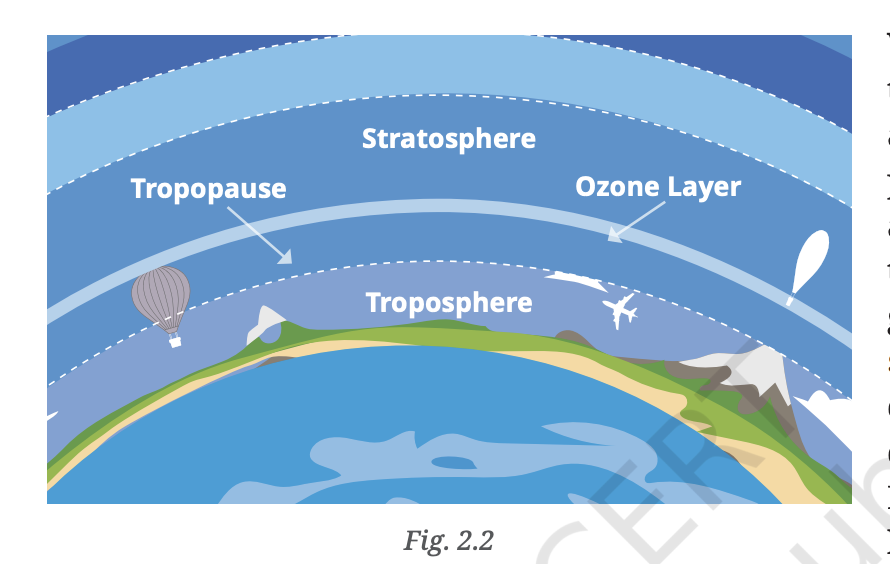
Fig. 2.1 — Layers of the Earth's atmosphere; the troposphere is closest to the surface
The troposphere extends to a height of 6 to 18 kilometres from the ground. It is less thick at the poles (cold air contracts) and thicker in the tropical zone (warmer air expands).
Five measurable components that describe the weather
We use many words to describe the weather — hot, cold, rainy, cloudy, humid, snowy, windy. They describe the different ways in which we experience the elements of weather.
🌡
Temperature
How hot or cold the atmosphere is
🌧
Precipitation
Any form of water (rain, snow, sleet, hail) that falls from the sky
⚖
Atmospheric Pressure
The weight of the air above us, felt on the Earth's surface
💨
Wind
The movement of air, including its speed and direction
💧
Humidity
The amount of water vapour in the air
Krishnan from Chennai is speaking with Amir in Kashmir. Krishnan says it has become chilly after the previous night's rain. Amir asks how cold it is. How will Krishnan explain to Amir how cold it is? After all, what is cold for Krishnan may be quite pleasant for Amir!
What do you think could be some other reasons to measure the weather more precisely? (Hint: Think how knowing the weather a few hours or a few days in advance would help you plan some activities.)
Ancient signs that humans have used to predict the weather
From early times, humans have closely observed Nature and learnt to read her signals to forecast the weather. Even today, in many parts of India, people use traditional ways to predict the weather, especially the arrival of the monsoon.
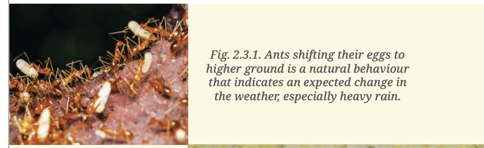
Fig. 2.3.1 — Ants shifting eggs to higher ground indicates expected heavy rain
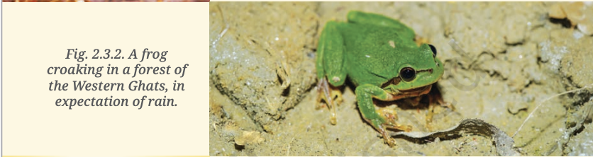
Fig. 2.3.2 — A frog croaking in the Western Ghats, in expectation of rain
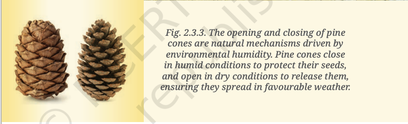
Fig. 2.3.3 — Pine cones close in humid conditions, open in dry conditions
Meteorology is the systematic study of weather and its evolution. This study is the basis for weather forecasting.
Talk to elders in your neighbourhood and ask them how they predict the weather. What signs do they observe? Document any sayings in your regional language that refer to weather prediction.
How we measure each element of the weather precisely
📚 Let's Remember (Grade 6): Clinical thermometer, laboratory thermometer, Celsius and Fahrenheit scales. Example: 15°C = 59°F
There are several types of thermometers. Some measure the ambient temperature; others record the maximum and minimum temperatures during a day. Thermometers often use a coloured liquid which expands when temperature increases. Digital thermometers are preferred as they are more precise and can record more data.
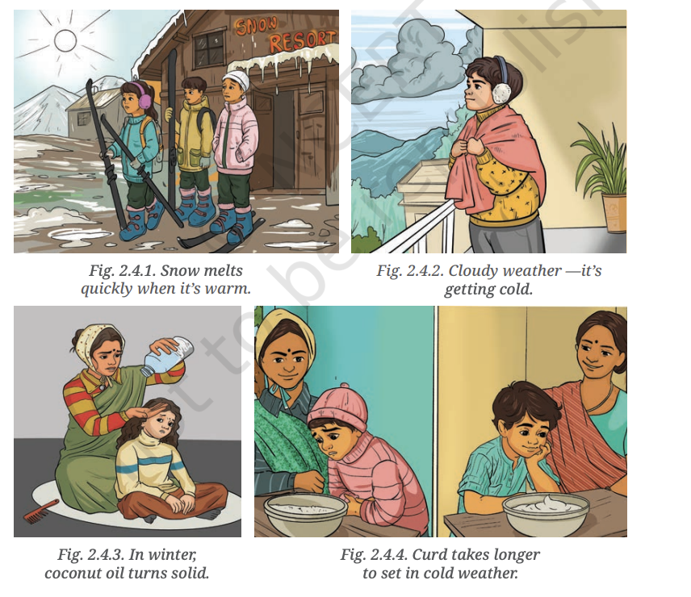
Let's Explore — Temperature chart of a city in Madhya Pradesh: find maximum, minimum, and calculate the range
📊 Range of Temperature
= Maximum temperature − Minimum temperature (usually over 24 hours)
📊 Mean Daily Temperature
= (Maximum temperature + Minimum temperature) ÷ 2
🏛 Don't Miss Out — The India Meteorological Department (IMD) was set up in 1875. Its motto is ādityāt jāyate vriṣhti, which means "From the sun arises rain." The phrase comes from the ancient text Manusmṛiti. The complete sentence reads: "From the sun arises rain, from rain comes food, and from food, living beings originate."
The amount of rainfall is measured with the help of an instrument called a rain gauge (Fig. 2.6). When it rains, the water falls into a funnel and is collected in a cylinder. A scale is attached to the cylinder to measure the depth of rainwater collected. When the height of water is 5 mm, we say that the area received 5 mm of rainfall.
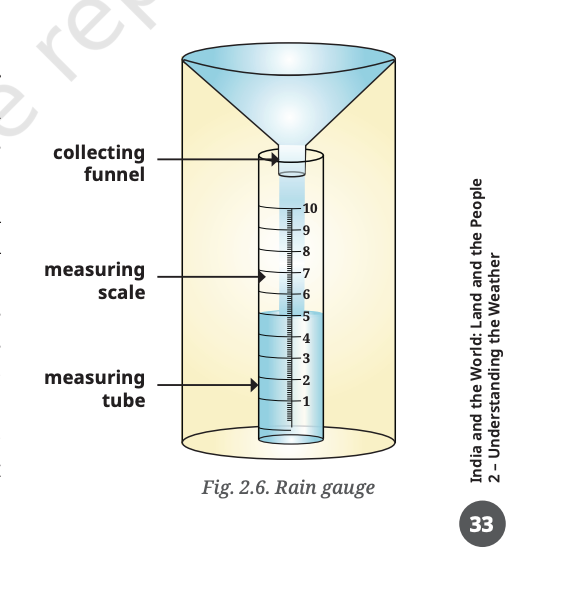
Fig. 2.6 — Rain gauge: water falls into funnel, collects in cylinder; rainfall measured in mm
You may have experienced that the weather sometimes feels 'heavy', as before a thunderstorm. This is related to atmospheric pressure — the pressure exerted by the weight of the air above and around us.
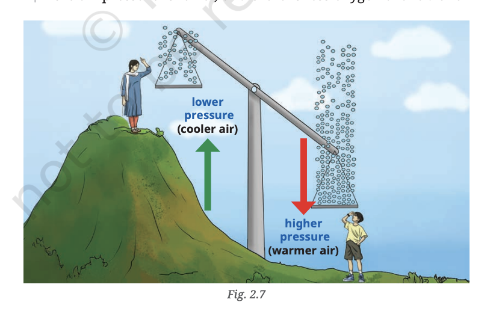
Fig. 2.7 — Atmospheric pressure is higher near sea level and decreases with altitude; less oxygen at high altitude causes breathlessness
📏 Instrument: Barometer
Unit: millibar (mb)
Normal (sea level): ~1013 mb
Depression: below 1000 mb
⛰ Pressure is higher near sea coast and lower at high altitude. Thinner air → less oxygen → breathlessness, dizziness, tiredness at high altitudes.
🤔 Think About It: Our army personnel serve at Khardung La in Ladakh (over 5600 metres above sea level). The atmospheric pressure there is generally about 650 millibars! People journeying to high altitudes are advised to make pauses to allow the body to acclimatise.
Atmospheric pressure sometimes drops dramatically, resulting in what meteorologists call a 'depression' or 'low-pressure system', which can develop into a storm or even a cyclone.
Wind is the movement of air from areas of high pressure to areas of low pressure. Speed and direction are two important factors when we describe the wind.
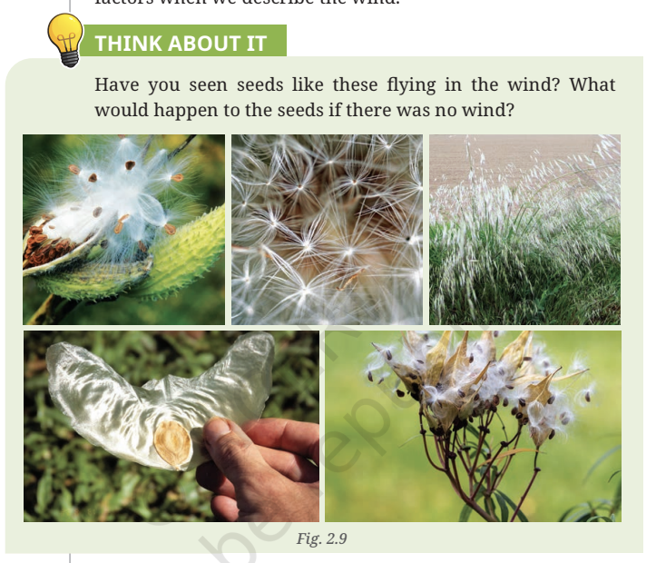
Fig. 2.9 — Wind-dispersed seeds: What would happen to these seeds if there was no wind?
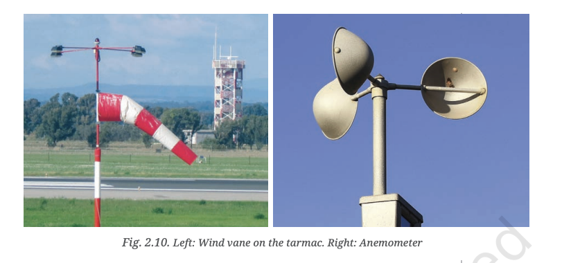
Fig. 2.10 — Wind vane / weather vane and wind sock on airport tarmac
🪄 Wind Vane
Rotating arm with a pointer and a tail. Wind pushes the tail → pointer turns in the direction of wind. A wind sock on airport tarmac gives pilots wind direction during take-off and landing.
💨 Anemometer
Three or four metal cups rotate on a vertical shaft. Stronger wind = faster rotation. Meter calculates wind speed in km/h.
Humidity is the amount of water vapour present in the air. It also depends on factors like temperature, wind, pressure and location.
🤔 Where is humidity likely to be more — Kochi or Jaipur? Kochi is near the sea, so it has higher humidity. The instrument that measures humidity is called a Hygrometer.
Where all weather instruments come together
We need several instruments to measure the weather at a particular place and time. A weather station brings all these instruments together, making it easy to measure and track the weather. Readings are taken at regular intervals, which helps in mapping and forecasting the weather.
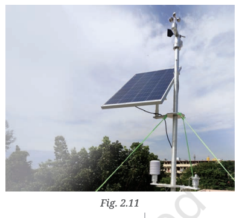
Fig. 2.11 — An Automated Weather Station (AWS)
⚙ Automated Weather Station (AWS)
An AWS is a self-operating system that uses various sensors to measure and record weather data — temperature, humidity, wind speed and direction, precipitation, and atmospheric pressure. Used in agriculture, aviation, navigation, and environmental monitoring, providing accurate and timely weather information without the need for human intervention.
How meteorologists use data to forecast weather and save lives
Meteorologists collect data using instruments over long periods of time. They study the data and use scientific methods to predict how the weather will behave in a particular region — after a few hours, a few days, or even a few weeks.
Accurate predictions help us be ready for events and enable local governments to mobilise resources. For example:
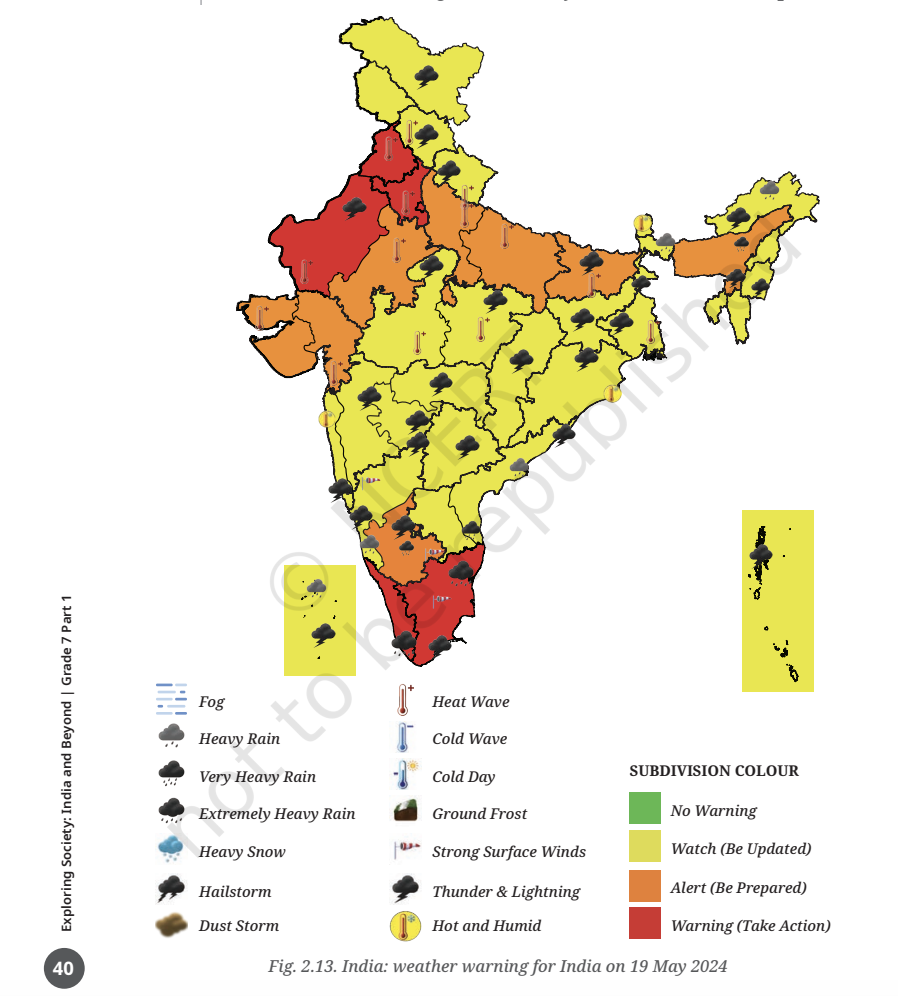
Fig. 2.12 — Weather warning map issued by IMD on 19 May 2024
🔍 Let's Explore — Study the IMD map above and answer:
🔍 Let's Explore — Discuss, in pairs, different situations in which weather predictions are helpful. Make a list, share and compare with the pair next to you. How many different categories have you identified?
| Element of Weather | Instrument | Unit |
|---|---|---|
| Temperature | Thermometer | Degree Celsius (°C) |
| Precipitation (Rainfall) | Rain Gauge | Millimetres (mm) |
| Atmospheric Pressure | Barometer | Millibar (mb) |
| Wind Speed | Anemometer | km/h |
| Wind Direction | Wind Vane / Wind Sock | Cardinal direction (N, S, E, W) |
| Humidity | Hygrometer | Percentage (%) |
| Weather | Climate |
|---|---|
| Short-term (hours/days) | Long-term (30+ years) |
| Changes frequently | Relatively stable |
| Specific place and time | Large region |
| E.g.: "Delhi had heavy rain today" | E.g.: "Delhi has a semi-arid climate with hot summers" |